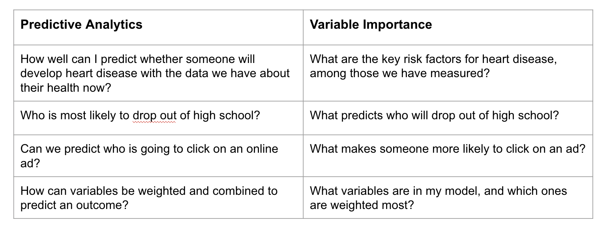

What are the most important predictors in my model?
Related to the previous question is: What are the most important predictors in my model? However, compared to the previous question about understanding who has low or high predicted probabilities, this question more specifically points to the model. The question takes us into a wide variety of methods focused on “variable importance” (VI).
The value of variable importance
VI is helpful for understanding and explaining a predictive model. VI methods also answer a set of related questions. Sometimes these related questions are what is most of interest.
The following chart provides some comparisons and contrasts of the types of questions answered by predictive analytics vs. variable importance:

Variable importance methods
There are a wide-range of methods for estimating VI.
These methods may be “model-specific” or “model-agnostic.”
Model-specific methods are only implemented for a specific modeling approach.
Model-agnostic methods are more flexible and can be applied to any modeling approach
VI methods may also be “model-driven” or “parameter-driven.”
Model-driven methods start with a predictive model and work to understand the predictive power of the predictors in the model. Model-driven methods for VI are either model-specific or model-agnostic.
Parameter-driven methods start with a target parameter and can use a variety of modeling approaches for estimation. Parameter-driven methods are always model-agnostic.
Model-specific methods
As an example of model-driven VI, let’s take regression:
In the context of regression models, VI is often assessed based on two main aspects: the size of the coefficients and the level of statistical significance, such as the t-statistic. It’s important to consider the absolute values of both these measures.
The coefficients in a regression model are particularly informative. They tell us about the expected change in the outcome variable for a one-unit change in the predictor, while keeping other variables constant.
However, there are several limitations to be aware of:
When variables are on different scales, comparing their coefficients directly can be misleading. One way to address this issue is through standardization, but this approach isn’t always practical, especially when dealing with different types of variables.
Multicollinearity, or the high correlation between predictor variables, can also pose a problem. It can make the estimates of the coefficients less reliable, as it’s harder to isolate the individual effect of each predictor.
Lastly, if your model includes interaction terms, interpreting the importance of variables becomes more complex. Interaction terms represent the combined effect of two variables, which adds an additional layer to understanding the individual impact of each variable.
This overview provides a basic understanding of how variable importance is assessed in regression models and highlights some common challenges you might encounter in this process.In the context of regression models, understanding variable importance (VI) is key. VI is often assessed based on two main aspects: the size of the coefficients and the level of statistical significance, such as the t-statistic. It’s important to consider the absolute values of both these measures.
The coefficients in a regression model are particularly informative. They tell us about the expected change in the outcome variable for a one-unit change in the predictor, while keeping other variables constant.
However, there are several limitations to be aware of:
When variables are on different scales, comparing their coefficients directly can be misleading. One way to address this issue is through standardization, but this approach isn’t always practical, especially when dealing with different types of variables.
Multicollinearity, or the high correlation between predictor variables, can also pose a problem. It can make the estimates of the coefficients less reliable, as it’s harder to isolate the individual effect of each predictor.
Lastly, if your model includes interaction terms, interpreting the importance of variables becomes more complex. Interaction terms represent the combined effect of two variables, which adds an additional layer to understanding the individual impact of each variable.
This overview provides a basic understanding of how variable importance is assessed in regression models and highlights some common challenges you might encounter in this process.
Model-agnostic methods
Permutation
A common approach to determining variable importance in models is the permutation-based method. This involves a few key steps:
First, you train and validate your model to establish a baseline performance measure.
Next, you permute, or shuffle, the values of one feature at a time. By doing this, you disrupt the relationship between that specific variable and the outcome.
After permuting a feature, you re-evaluate the model’s performance and compare it to the performance before the permutation. A significant change in performance indicates that the feature is important.
You repeat this process for all variables in your dataset, assessing the impact of each on model performance.
This permutation method is quite flexible:
It can be applied not just to individual variables but also to groups of variables.
It’s applicable across different modeling approaches, but the results may vary depending on the specific model used. This variation reflects how different algorithms understand and use the data.
For example, in models like random forests, which are known for spreading importance across many variables due to their ensemble nature, you might see a more distributed pattern of variable importance. In contrast, regularized regression models might show dominance of one variable over others, especially if the variables are correlated.
There are also model-specific versions of this permutation method, tailored to fit the nuances of different algorithms. For instance, in Random Forest models, the permutation method takes advantage of the ensemble technique inherent in these models.
SHAP (SHapley Additive exPlanations)
SHAP is a sophisticated method used to determine the importance of variables in predictive models. It is based on a key question: How much does each variable contribute to the difference between a specific prediction and the average prediction of the model?
The SHAP approach involves examining all possible combinations of variables in the model, considering whether each variable is present or absent. By doing this, it assesses how the presence or absence of a particular feature influences the model’s output compared to the average prediction.
The intuition behind SHAP is to allow for a fair distribution of contribution among all the features. It uniquely accounts for interactions and dependencies among features, which can significantly impact their contribution to the model’s predictions.
To compute the SHAP values (or Shapley values), the method calculates the average contribution of a variable across all possible combinations of other variables. Here’s how it works:
For each combination of variables that excludes the variable of interest, the model’s prediction performance is calculated both with and without that feature.
The contribution of the variable is then determined by the difference in the model’s predictions with the variable included versus excluded.
This process is repeated and averaged over all possible subsets of variables that do not include the variable in question.
The SHAP method provides a detailed and nuanced view of variable importance, especially useful in models with complex interactions and dependencies among variables. It helps in understanding not just whether a variable is important, but how and why it influences the model's predictions in the context of other variables.
These are just a few examples of a very large and often complex set of approaches to defining and estimating variable importance.
Finally, as an optional extra reading, this paper conducts both predictive analytics and variable importance and uses some clever approaches for turning the results in to actionable insights for refining a program’s services:
https://www.acf.hhs.gov/sites/default/files/documents/opre/Predicting-HMRF-Participation-Brief.pdf